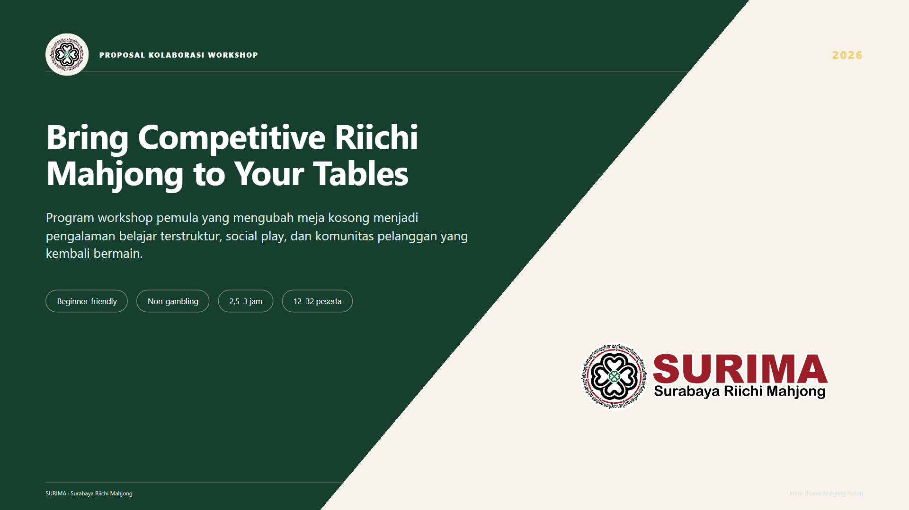
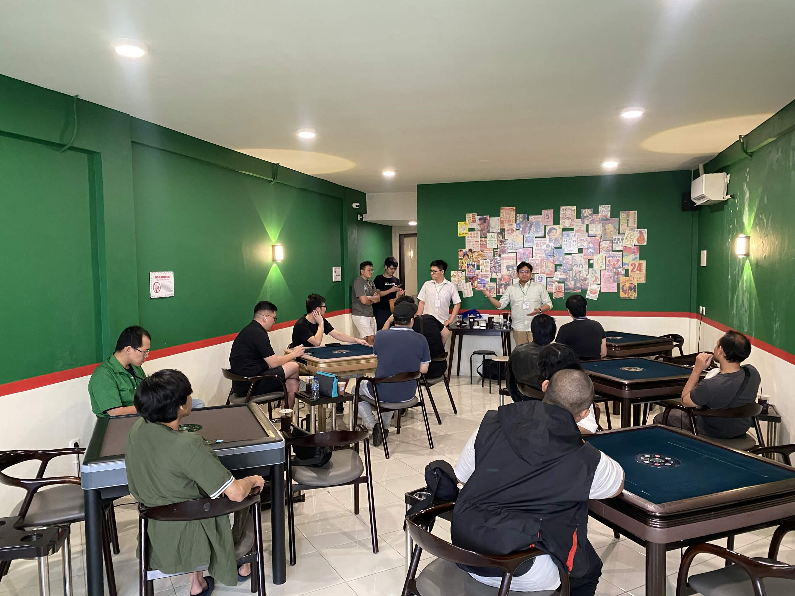
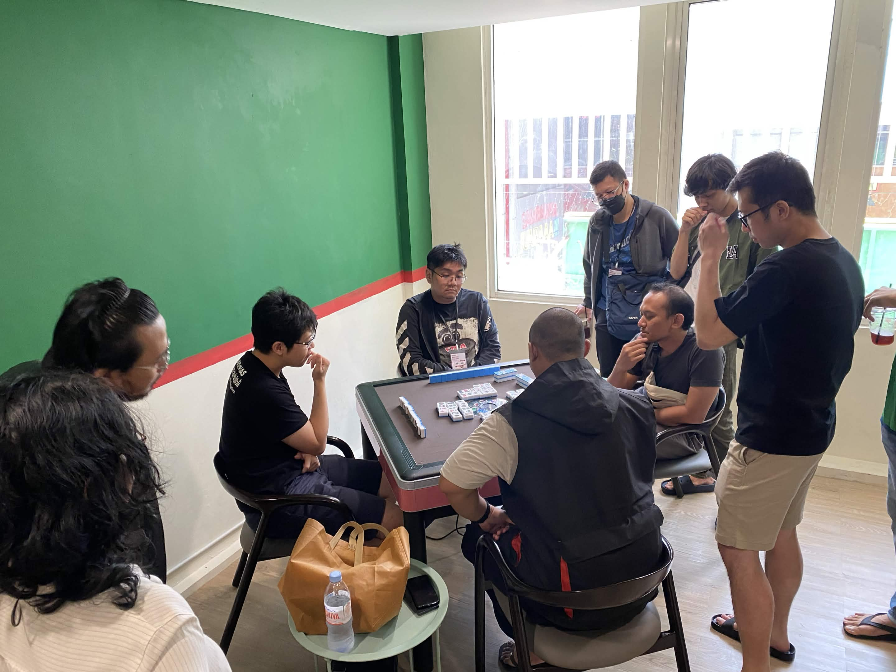
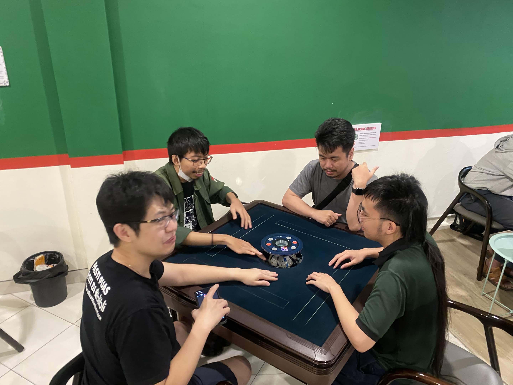
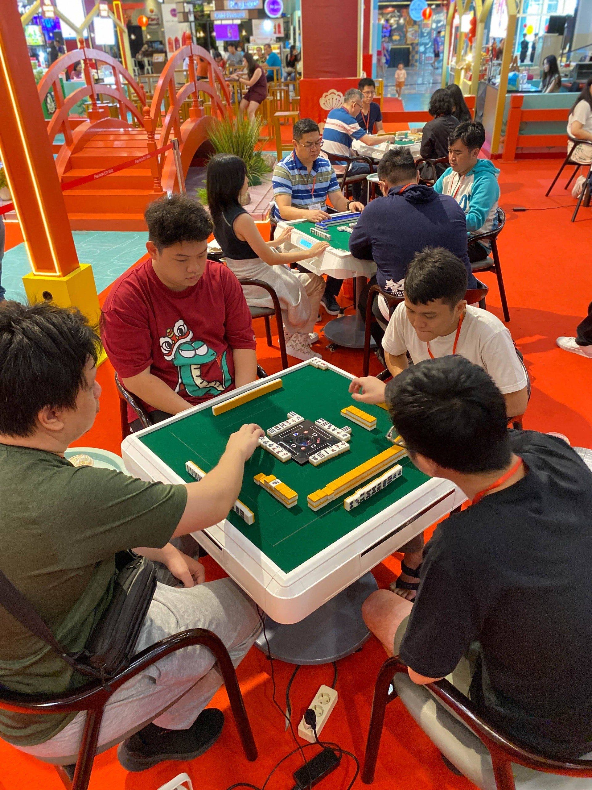

Materi & karya
Bahan belajar dan promosi SURIMA



Cuplikan foto dan video dari gathering SURIMA — mulai dari sesi rutin di Basecamp Board Game Cafe sampai booth di acara mall. Datang ke gathering berikutnya dan jadi bagian dari galeri ini.




